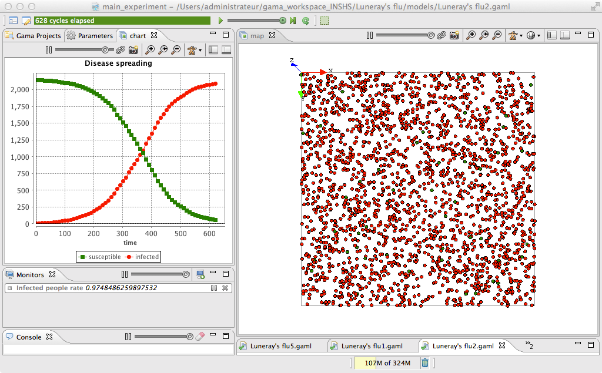

LuneraysFlu_step2
2. Definition of monitors and chart outputs
This second step illustrates how to create monitors and charts to follows the evolution of variables and to add an ending condition to the simulation.

Formulation
- Add three new global dynamic variables to follow the evolution of the number of infected people agents, of not infected people agents and of the rate of infected people.
- Define an ending condition for the simulation
- Define a monitor to follow the rate of infected people agents
- Define a chart to follow the rate of infected people agents
Model Definition
global section
global variables
GAMA offers the possibility to define dynamic variable that will be recomputed at each simulation step by using the update facet when defining a variable. When an agent is activated, first, it recomputes each of its variables with a update facet (in their definition order), then it activates each of its reflexes (in their definition order).
To better follow the evolution of sick people, we add three new global variables to the model:
- nb_people_infected of type int with nb_infected_init as init value and updated at each simulation step by the number of infected people
- nb_people_not_infected of type int with (nb_people - nb_infected_init) as init value and updated at each simulation step by the number of not infected people
- infected_rate of type float updated at each simulation step by the number of infected people divided by the number of people.
global{
//... other attributes
int nb_people_infected <- nb_infected_init update: people count (each.is_infected);
int nb_people_not_infected <- nb_people - nb_infected_init update: nb_people - nb_people_infected;
float infected_rate update: nb_people_infected/nb_people;
//... init
}
We used the count operator that allows to count the number of elements of a list for which the left condition is true. The keyword each represents each element of the list.
ending condition
The simplest way to add an ending condition to a model is to add a global reflex that is activated at the end of the simulation that will pause the simulation (use of the pause global action).
In our model, we add a new reflex called end_simulation that will be activated when the infected rate is 1.0 (i.e. all the people agents are infected) and that will apply the pause action.
global {
//.. variable and init definition
reflex end_simulation when: infected_rate = 1.0 {
do pause;
}
}
experiment
monitor
GAMA provides modelers with the possibility to define monitors. A monitor allows to follow the value of an arbitrary expression in GAML. It will appear, in the User Interface, in a small window on its own and be recomputed every time step (or according to its 'refresh' facet).
Definition of a monitor:
- value: mandatory, the expression whose value will be displayed by the monitor.
- refresh: bool, optional : if the expression is true, compute (default is true).
For our model, we define a monitor to follow the value of the infected_rate variable:
experiment main_experiment type:gui{
//...parameters
output {
monitor "Infected people rate" value: infected_rate;
//...display
}
}
Chart
In GAMA, charts are considered as a display layer. GAMA can display 3 main types of charts using the type facet:
- histogram
- pie
- series/xy/scatter: both display series with lines or dots, with 3 subtypes :
- series: to display the evolution of one/several variable (vs time or not).
- xy: to specify both x and y value. To allow stacked plots, only one y value for each x value.
- scatter: free x and y values for each serie.
In our model, we define a new display called _ chart_display_ that will be refresh every 10 simulation steps. In this display, we add a series charts with 2 layers of data:
- susceptible: the number of people that are not infected (in green)
- infected: the number of people that are infected (in red)
experiment main_experiment type:gui{
//...parameters
output {
//...display and monitors
display chart_display refresh:every(10 #cycle) {
chart "Disease spreading" type: series {
data "susceptible" value: nb_people_not_infected color: #green;
data "infected" value: nb_people_infected color: #red;
}
}
}
}
Complete Model
model model2
global {
int nb_people <- 2147;
int nb_infected_init <- 5;
float step <- 5 #mn;
geometry shape<-square(1500 #m);
int nb_people_infected <- nb_infected_init update: people count (each.is_infected);
int nb_people_not_infected <- nb_people - nb_infected_init update: nb_people - nb_people_infected;
float infected_rate update: nb_people_infected/nb_people;
init{
create people number:nb_people;
ask nb_infected_init among people {
is_infected <- true;
}
}
}
species people skills:[moving]{
float speed <- (2 + rnd(3)) #km/#h;
bool is_infected <- false;
reflex move{
do wander;
}
reflex infect when: is_infected{
ask people at_distance 10 #m {
if flip(0.05) {
is_infected <- true;
}
}
}
aspect circle {
draw circle(10) color:is_infected ? #red : #green;
}
}
experiment main type: gui {
parameter "Nb people infected at init" var: nb_infected_init min: 1 max: 2147;
output {
monitor "Infected people rate" value: infected_rate;
display map {
species people aspect:circle;
}
display chart_display refresh: every(10 #cycle) {
chart "Disease spreading" type: series {
data "susceptible" value: nb_people_not_infected color: #green;
data "infected" value: nb_people_infected color: #red;
}
}
}
}